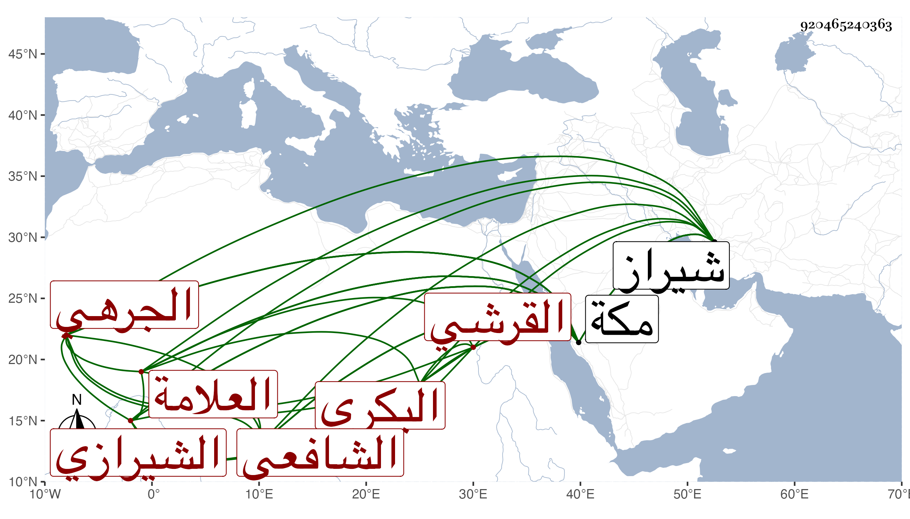

0902Sakhawi.DawLamic.ITO20230111-ara1.EIS1600.920465240363
Biography ID: 920465240363
57
محمد بن عبد الرحيم بن عبد الكريم بن نصر الله بن سعد الله بن أبي حامد عبد الله بن عبيد الله العلامة عفيف الدين أبو محمد وأبو السعادات بن الشرف القرشي البكري الجرهي بكسر الجيم والراء الشيرازي الشافعي الماضي أبوه والآتي نعمة الله ولده . ولد في يوم الخميس خامس عشري وبخطي في مكان آخر خامس رجب سنة سبع وسبعين وسبعمائة بشيراز واعتنى به أبوه فاستجاز له جماعة من شيوخ الآفاق ثم طلب بنفسه فقرأ على أبيه جملة وعلى غيره بمكة وغيرها ، فممن أخذ عنه بمكة إمام المالكية النور أبو الحسن علي بن أحمد بن عبد العزيز العقيلي النويري وابن أخيه المحب أحمد بن محمد بن أحمد بن عبد العزيز وابن صديق وأبو عبد الله بن سكر وأبو اليمن وأبو الخير الطبريان والجمال بن ظهيرة والمجد اللغوي وابن سلامة وشيخنا ابن حجر والتقي الفاسي وابن الجزري وبشيراز محيي الدين أبو حامد محمد بن محمد بن محمد بن محمد الغزالي ونسيم الدين محمد بن محمد بن مسعود الكازروني البلياني والنور محمد بن عبد الله بن محمد بن عبد الله الأيجي وبكازرون أحمد بن عمر بن محمد بن عمر البلياني وبعدن عبد الرحمن بن حيدر الدهقلي وشيخنا حسبما قاله صاحب الترجمة في مشيخته وأن ذلك سنة ست وثمانمائة فقرأ عليه مسند الشافعي والبردة وسمع عليه أربعي النووي ولازم مجلسه قريبا من ثلاثة أشهر ثم لقيه أيضا بمكة في سنة خمس عشرة فقرأ عليه المناسك للعلامة تقي الدين الجراحي وراسله بأسئلة أجابه عنها كما بينت بعض ذلك في الجواهر والدرر ، وأخذ الفنون عن السيد الجرجاني لقيه بالمدرسة البهائية والفقه عن الغياث محمد بن علي بن أبي بكر الجيلي قرأ عليه بعض الحاوي ، وكان ذا عناية بالحديث ولقاء الشيوخ وعلى يديه أجاز جماعة من المسندين لأهل نواحيه وانتفع به في ذلك كوالده ومن شيوخه ظهير الدين عبد الرحمن بن أبي الفتوح الطاووسي بل حدث هو وإياه بالشمائل للترمذي بقراءة الطاوسي ابن أخي أحدهما وأجاز له وخرج له مشيخة وقفت على منتقى النجم بن فهد منها ، وهو ممن أخذ عنه أبوه التقي . مات سنة تسع وثلاثين ببلاده رحمه الله وإيانا .
